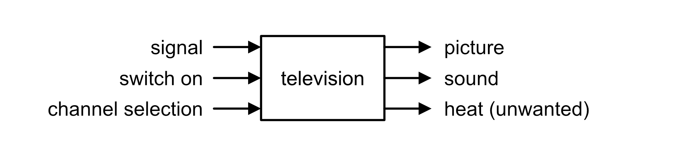
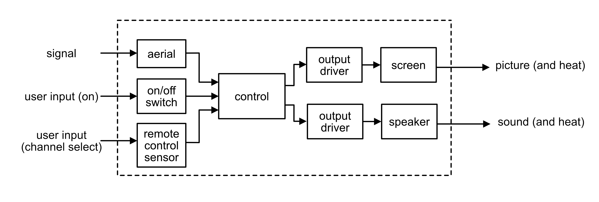
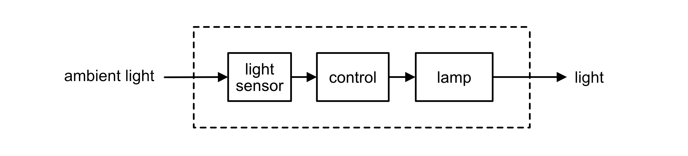
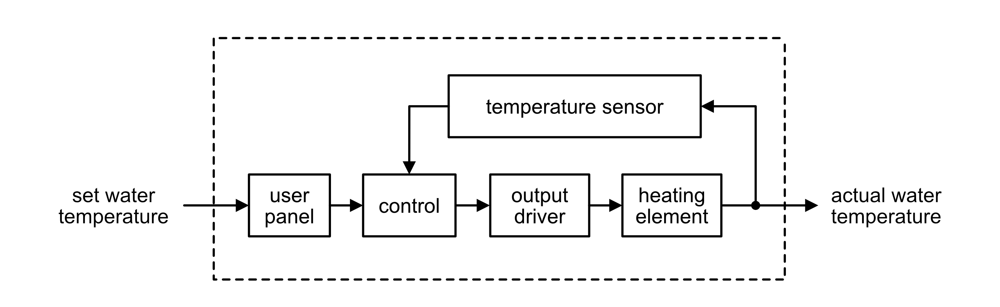
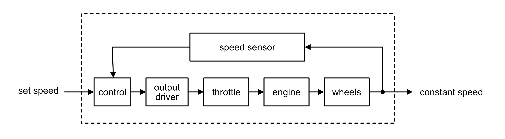
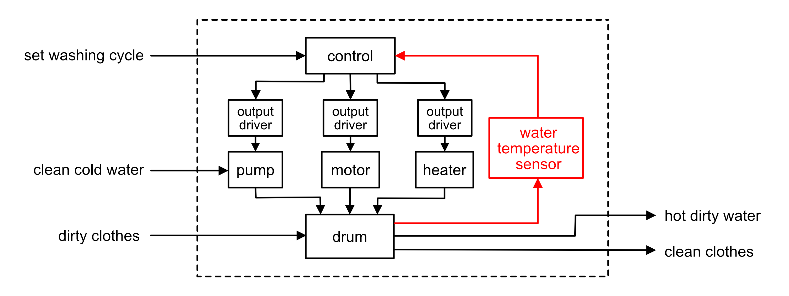
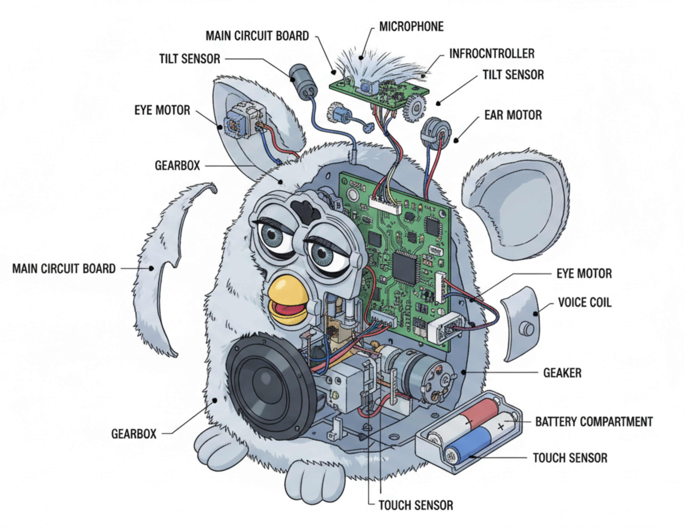

Section 1: What is a System?
Engineers and designers are in the business of solving problems. Whether designing a new bridge, a home electronic device, or a satellite communications system, engineers use a common way of thinking called the systems approach.
A system is a collection of components that work together to perform a function. All systems — no matter how simple or complex — can be described using the same basic structure:
This is called the universal system diagram. The word "universal" means it can be used for any situation at all.
- Input — what goes into the system to make it work (e.g. electricity, a signal, a physical force)
- Process — what the system does to the input
- Output — what comes out of the system (desired outputs and unwanted outputs)
A television receives a broadcast signal, is switched on by the user, and the user selects a channel. It outputs picture, sound, and heat as an unwanted output.

| Device | Inputs | Process (Device) | Outputs (wanted + unwanted) |
|---|---|---|---|
| Kettle | KETTLE | ||
| Toaster | TOASTER | ||
| Radio | RADIO | ||
| Washing machine | WASHING MACHINE | ||
| 3D printer | 3D PRINTER | ||
| Fire alarm | FIRE ALARM |
Section 2: Sub-Systems Diagrams
The universal system diagram tells us what goes in and what comes out — but not how it works inside. The next step is to explode the process box into its sub-systems, showing how each part of the system interacts.
Key terms
- System boundary — a dashed line enclosing all the sub-systems. Real-world inputs and outputs are outside the boundary.
- Transducer — a device that converts one form of energy to another. Input transducers convert real-world inputs into electrical signals; output transducers convert electrical signals into real-world outputs.
- Input transducer (sensor) — e.g. thermistor, LDR, microphone, switch
- Output transducer (actuator) — e.g. motor, loudspeaker, LED, heater
- Output driver (also called a transducer driver) — an electronic component that boosts a low-power control signal from the control unit to provide the higher current or voltage required to operate an output device such as a motor or heating element. Every output transducer needs a driver (e.g. transistor, relay, op-amp).
The television has three real-world inputs: a broadcast signal, user input via a remote control, and user input via the on/off switch. The outputs are picture (along with light and heat) and sound.

Section 3: Open-Loop and Closed-Loop Control
Any system must have some way to control its operation. Control can be manual (humans provide the control) or automatic (the system operates without human interaction). Systems can also be described as open-loop or closed-loop.
Open-loop control
In an open-loop system, the output simply switches on or off when a certain input happens. There is no feedback — the system does not monitor its output. Once activated, it stays on until switched off.
An automatic street light uses an LDR (light-dependent resistor) to detect when it gets dark. When the light level drops below a set threshold, the LDR triggers the control unit, which switches on the LED array via an output driver. There is no feedback — the system cannot detect whether the light is actually illuminating the street. It simply switches on when dark and off when light returns.

Closed-loop control
In a closed-loop system, the output is continually monitored and fed back to adjust the process. This makes the system far more accurate. The feedback signal is compared to the desired value and the system corrects itself automatically.

- Simple to design and cheap to build
- No feedback — cannot correct errors
- Output may drift from desired value
- Examples: toaster, street lamp timer, microwave oven
- More complex and expensive
- Feedback allows automatic correction
- Output is maintained at the desired value
- Examples: thermostat, cruise control, GHD straighteners
The four types of control
| Type | Manual or Automatic? | Feedback? | Example |
|---|---|---|---|
| Manual open-loop | Manual | No | Pressing a switch to turn on a heater |
| Manual closed-loop | Manual | Yes (human monitors) | Adjusting a shower temperature by feel |
| Automatic open-loop | Automatic | No | A sensor-activated security light (no dimming) |
| Automatic closed-loop | Automatic | Yes (sensor monitors) | Car cruise control, central heating thermostat |
The driver sets a desired speed. A speed sensor (tachogenerator) continuously measures the actual vehicle speed and feeds this back to the control unit. If the actual speed differs from the set speed, the output driver adjusts the throttle to correct it. The system constantly monitors and corrects, keeping the speed accurate.

Section 4: Case Study — Domestic Appliances
Many everyday appliances use systems principles. The washing machine is a good example of a system with multiple levels of control complexity.
Washing machine
A washing machine is a complex system with both open and closed-loop elements. The wash programme (timer, spin speed) is essentially open-loop — it runs a fixed sequence regardless of outcome. However, the water heating uses closed-loop control — a temperature sensor monitors the water temperature and feeds back to the control unit, which switches the heater on or off to maintain the correct washing temperature.
The user sets a washing programme and temperature. The control unit switches the heater on via the output driver. A water temperature sensor continuously monitors the water and feeds back to the control unit. When the target temperature is reached, the control unit switches the heater off. If the temperature drops, the heater switches back on. This feedback loop maintains the correct temperature throughout the wash.

Section 5: Case Study — The Furby Electronic Toy
The Furby is a good example of a mechatronic system — one that uses an electronic circuit to control a number of mechanisms. It contains several sensors so it can react to changes in its environment (e.g. being placed in a dark room or turned upside down).
